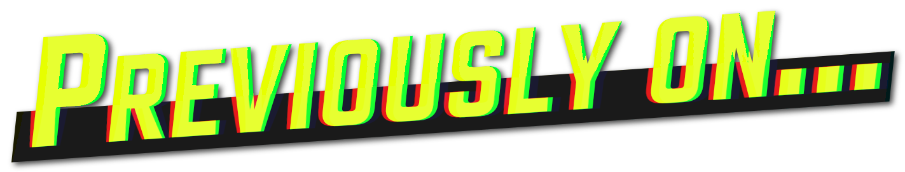

Meine kreative Arbeit
Im Rahmen meines Medienwissenschaftsstudium und meiner Arbeit am d.a.i.
Tübingens konnte ich drei kreative Projekte verwirklichen.
-

"Previously On" war eine Online-Filmkolumne, die als Nachfolger eines
regelmäßig stattfindenden Filmabends entstand, bei dem man gemeinsam
Filme geschaut und anschließend entspannt, aber auch kritisch über diese
diskutiert hat. Daher habe ich versucht, den Ton der Kolumne leicht und
persönlich, aber reflektiert zu halten. Generell handelt es sich hier
jedoch um einen Meinungsbeitrag.
-
Dieser Hörbeitrag ist im Rahmen eines Seminars entstanden. Ich habe ihn
selbst geschrieben, geplant und erstellt. Ich habe die verschiedenen
Interviews geführt, das Skript eingesprochen und anschließend alles in
einem 25 minütigen Beitrag zusammengeschnitten. Das Konzept war ein
auditiver Rundgang, bei welchem man nicht nur das Institut und seine
Aufgaben, sondern auch die Menschen hinten den Kulissen näher
kennenlernt.
-
Im Rahmen des Tübinger Studentenfilmfestival “Die Tübinale” habe ich,
als Teil einer vierköpfigen Gruppe, den Kurzfilm “The Tide” eingereicht.
Das Thema war Medien und Ideologie. Der Film war ein absolutes
Gemeinschaftsprojekt und jedes Gruppenmitglied war an jedem
Einzelschritt beteiligt. Wir haben das Skript geschrieben und die
einzelnen Szenen gedreht, diese gemeinsam geschnitten und mit Musik
unterlegt. Wir waren auch alle als Schauspieler*innen vertreten. Unser
Film wurde dann im Zuge der Tübinale im Museumskino ausgestrahlt.